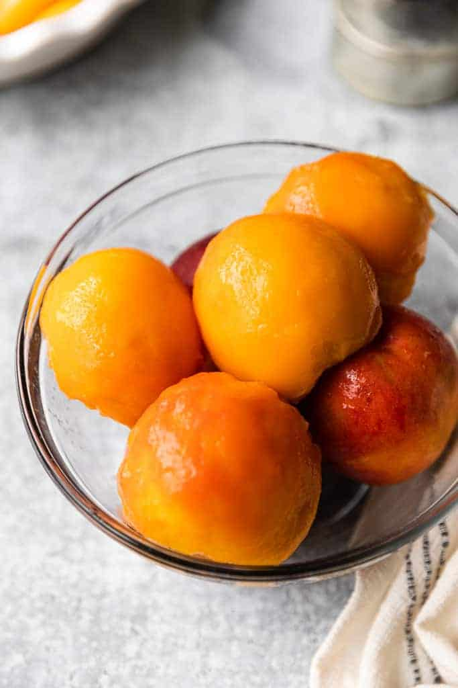

How Do I Peel All These Peaches?

Blanch em' yo!
When a recipe calls for several peeled peaches, you
know it’s going to be delicious but getting peach
skin to come off smoothly, using a knife or a
peeler, can be time consuming! (Not to mention
you often lose chunks of peach flesh doing it
that way.)
This blanch and shock method for peeling peaches is
the easiest way to remove the skin from peaches
quickly and without a knife or peeler.
Materials
- Pot large enough for several peaches
- Ice
Peeling the Peaches
- Boil a large pot of water. Choose a pot big enough to fit several
peaches at a time.
- Blanch peaches: Reduce heat to a simmer and lower peaches into
the water. Let them blanch in the water for about 30 seconds.
- Place them in an ice bath. After you scald the peaches in
hot water you want to stop them from cooking (“shock” them) by
immediately putting them in an ice water bath until they have cooled.
- Peel the skins off. The peach skin should be very easy to pull away gently
with your hands, or use a knife to make a small slit to get it started.